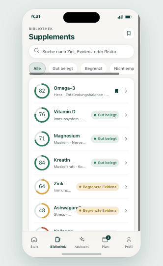
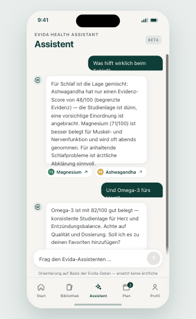
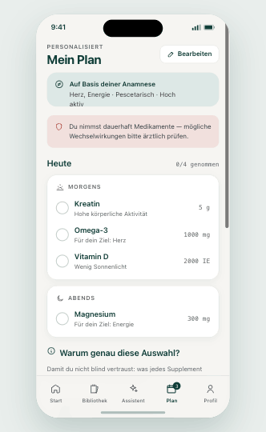

Herz, Schlaf, Immunsystem oder Energie — du bestimmst die Richtung.
Jedes Supplement erhält einen Score aus Studienqualität, Konsistenz und Zielbezug.
Nimm, was sinnvoll ist. Lass weg, was nicht belegt ist. Du behältst die Entscheidung.
Durchsuche alle Supplemente nach Ziel, Evidenz oder Risiko — Score und Bewertung auf einen Blick. Stöbern, suchen und lesen funktioniert ganz ohne Konto.

Statt einer nackten Zahl zeigt Evida zuerst die Bewertung — und belegt sie mit Studienqualität, Konsistenz, Studiendesign und Relevanz. So verstehst du, warum etwas gut belegt ist.
Stell deine Frage in natürlicher Sprache — „Was hilft beim Schlaf?“ — und erhalte eine evidenzbasierte Einordnung mit Score-Bezug und Quellen-Chips zu den genannten Supplementen.

Ein kurzer Fragebogen erzeugt genau einen persönlichen Plan — mit dem Abschnitt „Warum genau diese Auswahl?“, der dir jedes Supplement erklärt. Du vertraust der Anamnese, statt selbst zum Experten werden zu müssen.

Supplemente und Plan-Regeln werden in einer internen Konsole von Fachkurator:innen gepflegt — nach dem 4-Augen-Prinzip. Jede Angabe durchläuft einen klaren Lebenszyklus, bevor sie in der App sichtbar wird.
Keine bezahlte Bevorzugung einzelner Hersteller. Die Einordnung folgt der Studienlage — nicht dem Marketingbudget.
Katalog, Evidenz-Score und Assistent sind frei nutzbar — Stöbern und Lesen funktioniert ganz ohne Konto.
Evida gibt Orientierung, keine Anweisung. Bei medizinischen Fragen verweisen wir auf ärztlichen Rat.
Score-Faktoren, Studienzahl und p-Werte sind einsehbar — du kannst die Einordnung selbst nachvollziehen.
Starte kostenlos und wähle dein erstes Ziel.